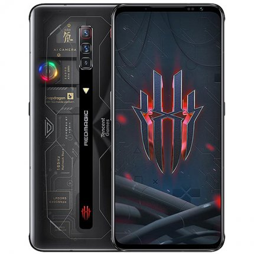

 Частота экрана типична для флагмана — 120 Гц. А вот сенсорный слой реагирует на ваши команды всего за 0,03 секунды, поэтому вам обеспечен комфортный игровой режим. Сетевой адаптер мощностью 65 Вт полностью заряжает смартфон в состоянии покоя за 35 минут, а при максимальных нагрузках — за 1 час. Интеллектуальная система управления питанием не допускает перегрева батареи во время геймплея. Тройная камера устройства собрана на базе 64-мегапиксельной матрицы Sony. Она предлагает ультра-ночной режим, позволяющий делать яркие фотографии с эффектом неоновых огней на тёмных улицах.